Practical advice for paticipating in #30DayChartChallenge
What is #30DayChartChallenge
Over the last three years (2023-2025) I’ve been participating in the #30DayChartChallenge. It’s an event in the data visualization community in which participants are challenged to create 30 charts in 30 days of the month of April based on the prompts provided by the orgs.
Here’s the example of prompts for 2024.
I found the challenge a useful tool to explore my interest in the data visualization as well as a great way to keep a structured approach to learning and doing and holding myself accountable.
With three years, four books and 90+ visualizations behind my belt, here is a collection of practical advice for people wanting to participate in the challenge interleaved with my observations about visualizing data in general.
General thoughts
Know what you want to get out of it
It’s difficult to make something great every day in the few hours in the evening after your day job while learning new tools. IMO There are two way to approach the challenge.
- “I will make something great using tools I already know”
- “I will make something and acquire new skill along the way”
The latter is my preferred approach, and I’ve been happy using the skills acquired during this challenge in my day job. I rarely produced truly great graphs, but each one that helped me learn a new concept, recipe, type of visualization or even a seldom-used argument to an already familiar function, I considered a success.
Interpret prompts losely
Treat the prompt as a vague suggestion, not a mandate.
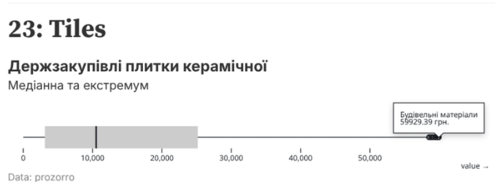
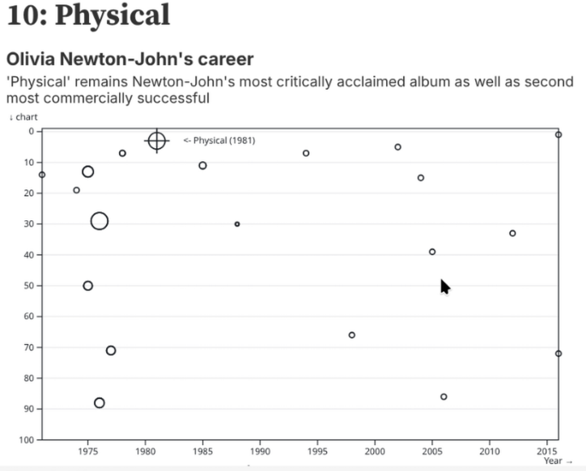
Get the data
Reusing datasets
Searching for the right data set to make the graph look just right can be a huge time sink. I recommend finding a couple of data sets that are interesting to you in advance and using them throughout the month.
Examples of using the same data for different prompts (clickable)
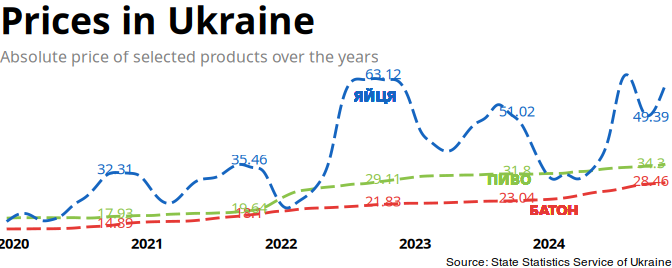 |
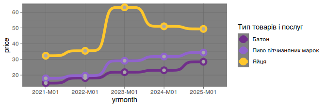 |
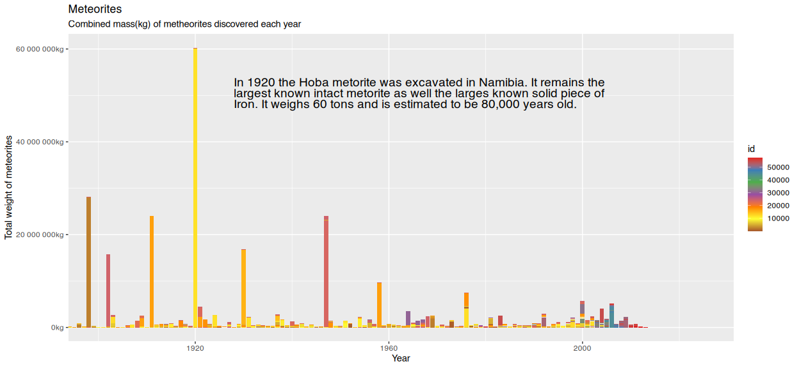 |
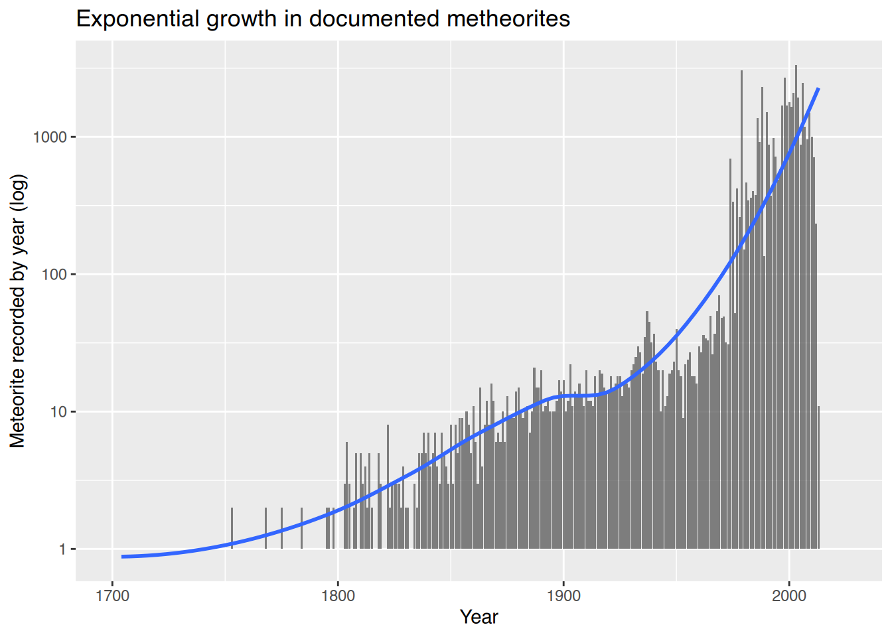 |
Using personal datasets
Plotting the data that you gathered yourself or that is about yourself is fun and has an added benefit in that you already have an intuitive feel for the data set, so it’s easier to plan out your visualizations.
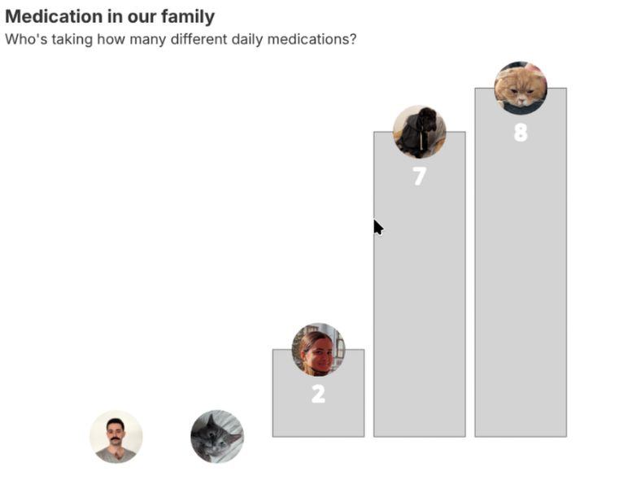 |
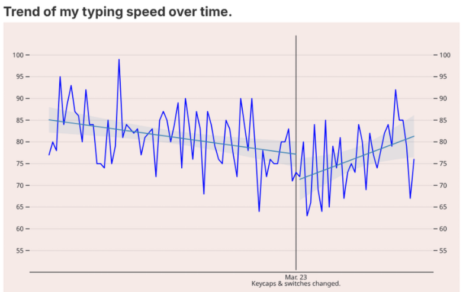 |
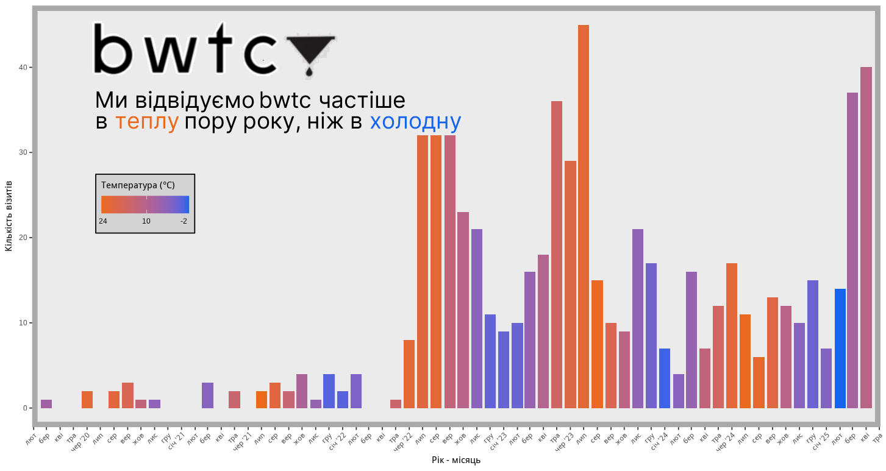
Data sources
data.gov.ua and the new stat.gov.ua are great, but have a varying quality of data. Many data sets are in xls or csv with archaic encodings (cp1252 anyone?). Some good sources for clean and tidy data sets: - OWID - TidyTuesday - Kaggle - eurostat - NYC OpenData
Visualisations
Verbosity
While dealing with data, it might seem redundant or overly verbose to add labels, subtitles, tags, etc. But they contribute to overall quality of your graph and make it easier to understand. Compare the two examples below:
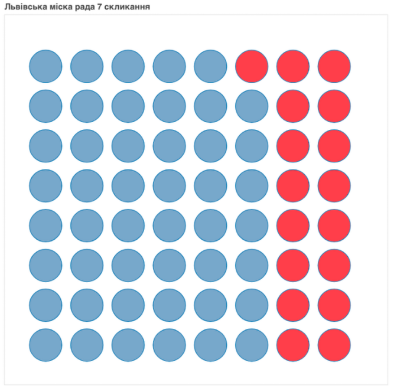 |
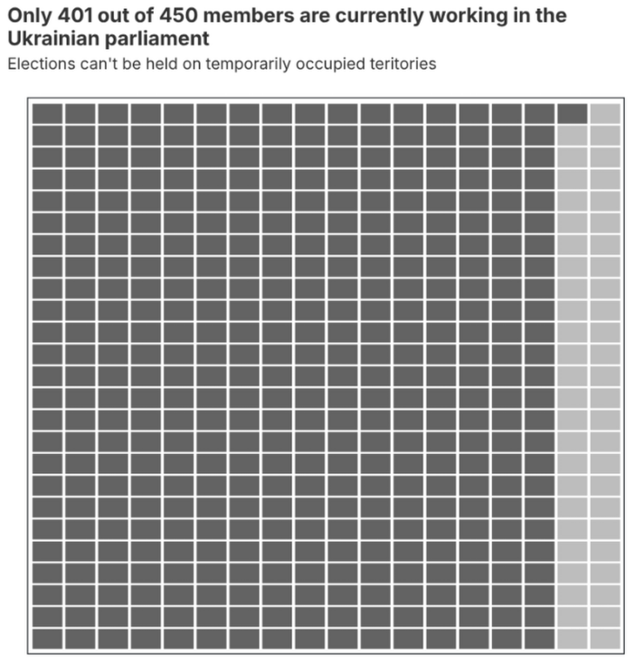 |
More examples of annotations helping to tell a story (clickable)
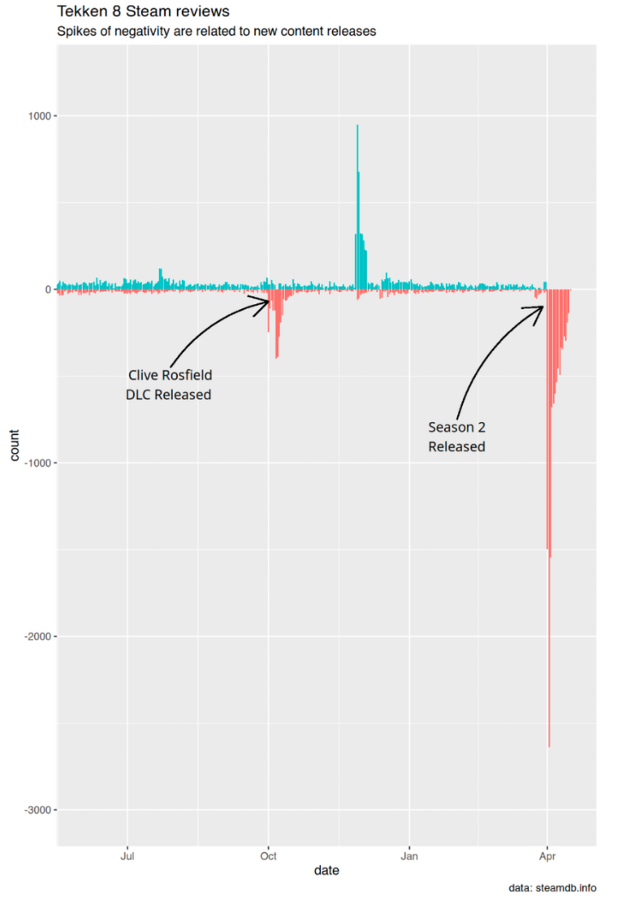 |
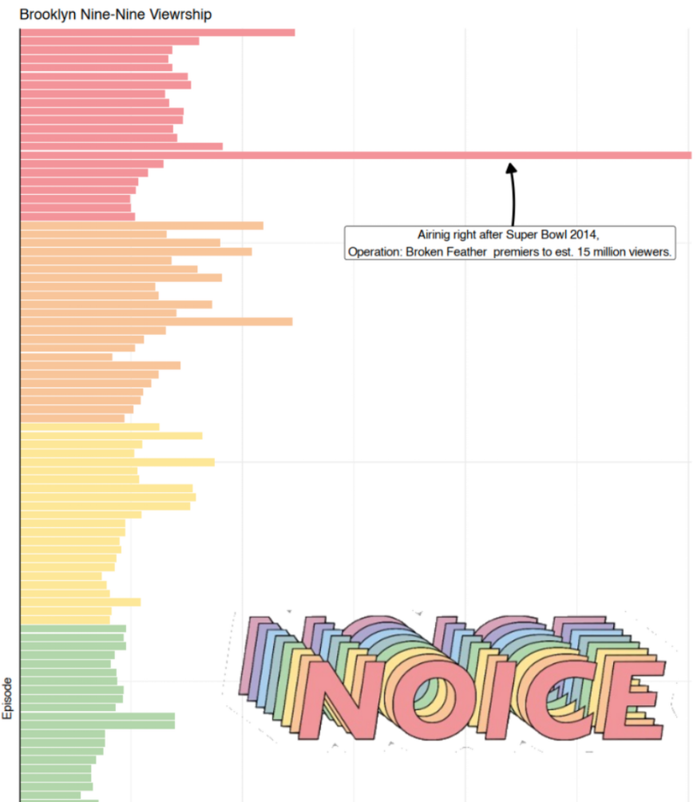 |
Interactivity
Interactivity via web-widgets feels cool, but in my opinion doesn’t add much value. Such interaction-heavy visualizations also don’t land themselves well to print or easy sharing.
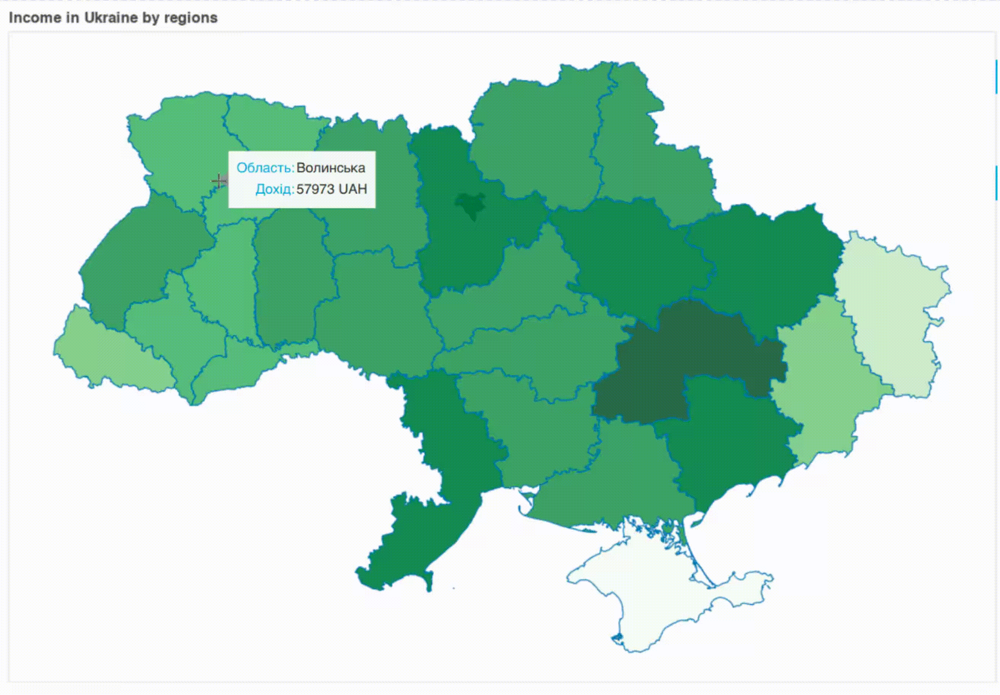
Good visualizations don’t make the reader work for insights by poking around with a mouse, instead they provide appropriate amount of data understandable and easily digestible at a glance. It’s usually better to just label the data.Either don’t use interactive annotations at all, or go all-in (when subject warrants it) and create interactive publications. Like this one about foundation color names. Note, that even in it, interactivity is used sparingly.
Colors and pallets
Picking the right color pallet, creating appropriate contrast, choosing fonts, making the graph visually appealing is difficult. Study and use ready made color pallets. Find out about ColorBrewer, paletteer and color finder.
This will help you avoid things like this
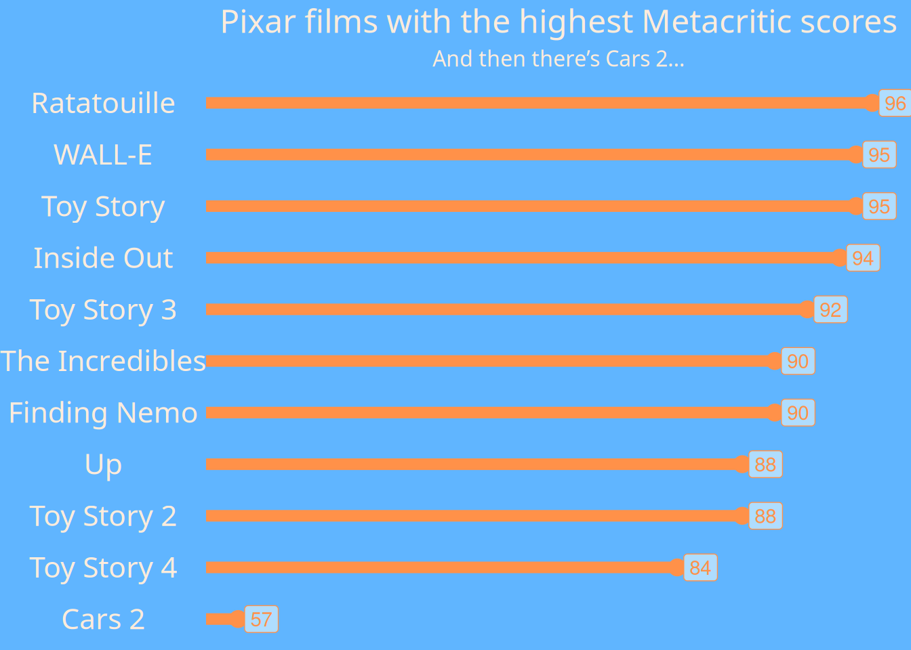
Maps are hard
Visualizing data on a map, dealing with shape files, boundaries, etc is difficult. Check out https://30daymapchallenge.com/ if you’re interested in that.
Pie charts are terrible
Humans aren’t good at interpreting angles. A stacked bar chart or a table is almost always better than a pie chart. To my surprise, most data viz tools don’t have a proper built-in way of doing pie charts. Typical stack overflow answers direct you to use low level graphing APIs to display segments over the manually calculated angles or transposing your graph into polar coordinates. I reckon it’s because people developing those tools know what’s up.
The following chart illustrates almost all pitfalls mentioned above…
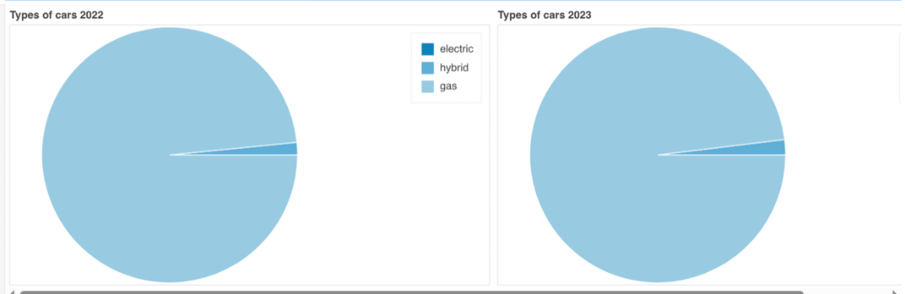
Oh, and don’t do this, I guess…
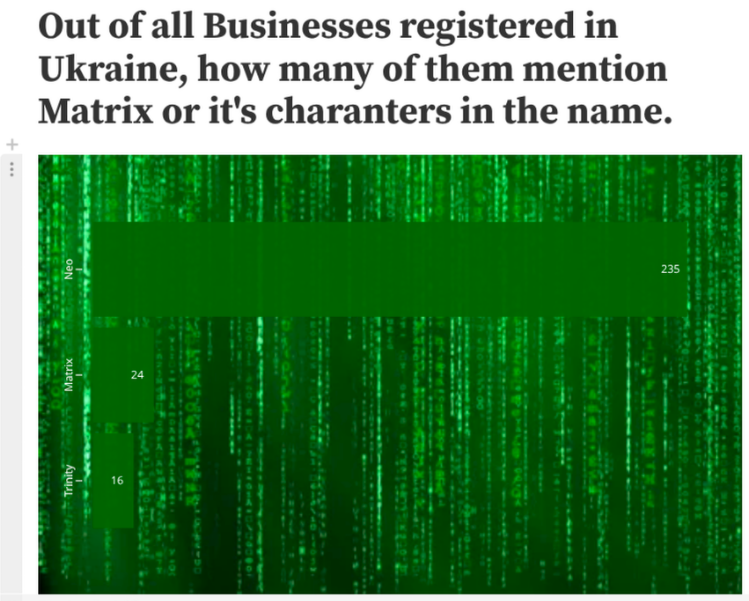
Steal
Get inspiration (and source code) from talented people on social media by following #30DayChartChallenge, #TidyTuesday, Nicola Rennie and more.
Cheat
Sometimes tools like Google Analytics are able to produce great visualizations, repeating which would be a redundant exercise. Use them. 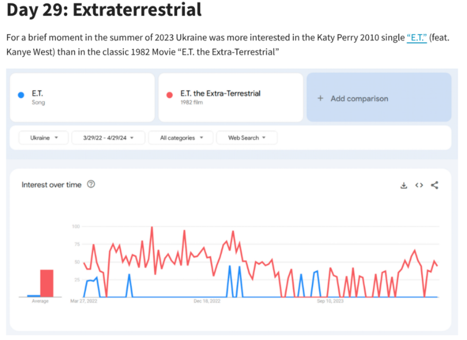
Repeat
Doing the challenge many years in a row allows to revisit and redo some of the plots from previous year.
This is how
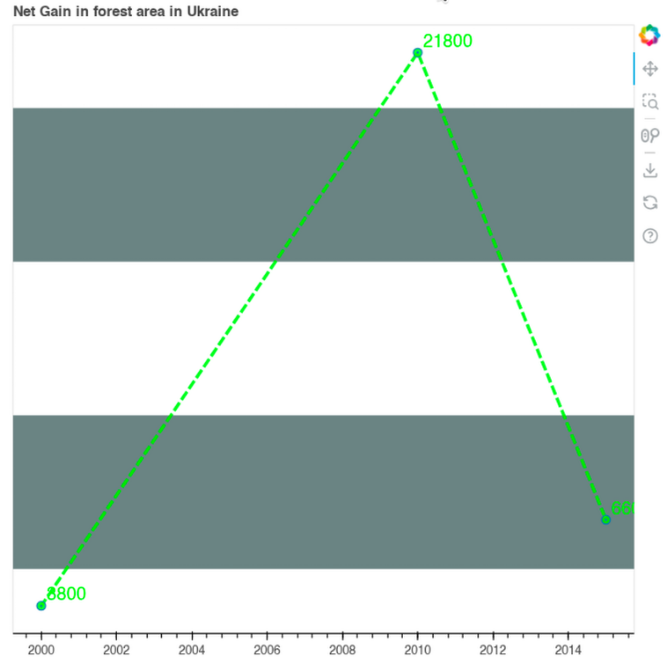
Turned into
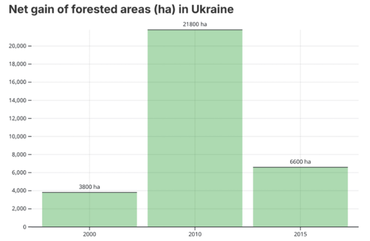
Conclusion
I think #30DayChartChallenge is a great opportunity to develop new skills in a structured and disciplined way. Approach it prepared, know what you want to get out of it, engage with the community.
Good luck, and see you in April 2026!